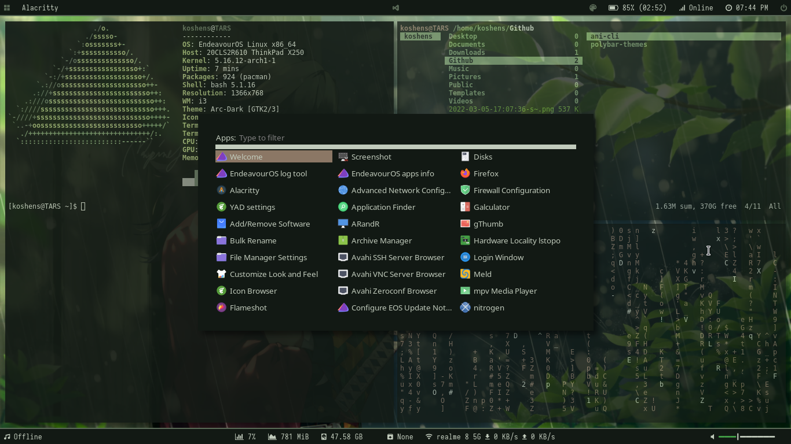
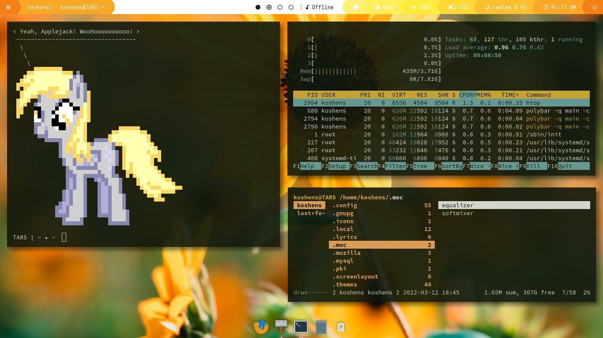

Linux Rices
Here are some of my Linux rices, each customized to be both beautiful and productive.
Evergreen
This was one of my first rices I made back in 2021.
Host: Lenovo Thinkpad X250
Kernel: 5.16.12-arch1-1
OS: EndeavourOS
Shell: Bash
WM: i3wm
Compositor: picom (ibhagwan's fork)
Terminal: Alacritty
Status Bar: Polybar
Launcher: Rofi
File Manager: Ranger
GTK Theme: Arc-Dark [GTK2/3]
Icons: Paper [GTK2/3]
Dotfiles: [LINK]
Orange Cheesecake
Inspired by an aesthetic cheesecake, this rice includes a bright theme with openbox window manager and a dark transparent terminal
Host: Lenovo Thinkpad X250
Kernel: 5.16.12-arch1-1
OS: EndeavourOS
Shell: Bash
WM: Openbox
WM Theme: Adiantum
Compositor: picom (ibhagwan's fork)
Terminal: Xfce4-Terminal
Status Bar: Polybar
Launcher: Rofi
File Manager: Ranger
Dock: Tint
GTK Theme: Lumiere-Magenta [GTK2/3]
Icons: Paper [GTK2/3]